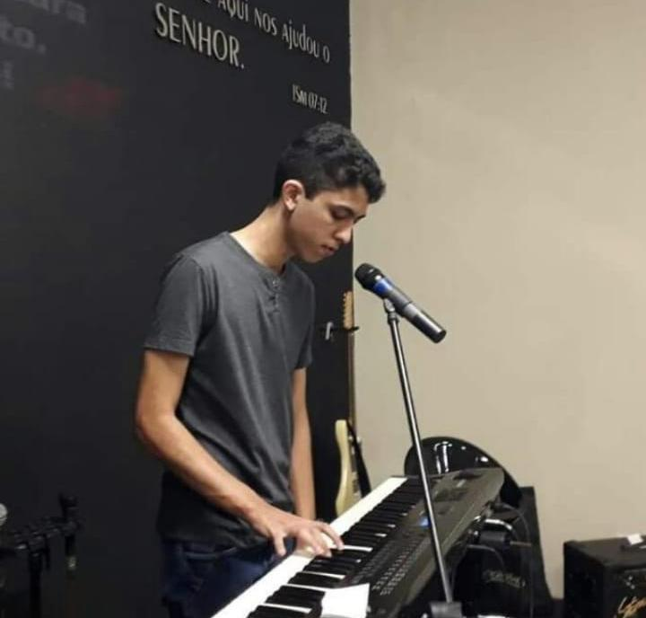
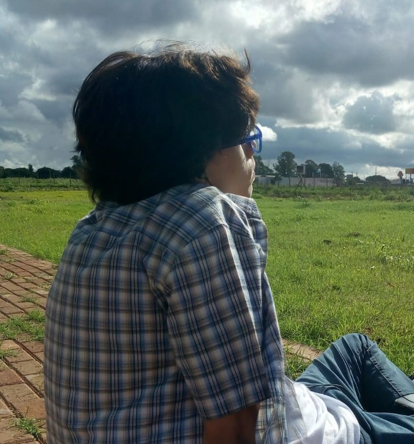
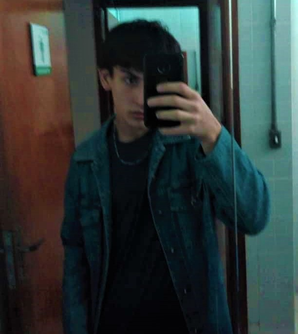

Fábio Luiz Faria da Silva
Possui graduação em Engenharia da Computação - Faculdades Associadas de São Paulo (2006), especialização pela FACEL em Docência em Ciência e Tecnologia da Informação (2018) e especialização pela FIAR em Licenciatura Pedagógica em História. Atualmente é professor efetivo do IFMS. Tem experiência na área de Ciência da Computação, com ênfase em Análise e Desenvolvimento/Desenvolvimento Web.

Click na imagem para ir ao lattes
Lukyan Sigarini de Paiva
Eu já tô aqui há 7 anos (CG-MS) passei o resto do meu ensino fundamental no colégio nova geração, desde 2020 faço ensino médio integrado como técnico em informática no IFMS e leio com facilidade em inglês e conheço o básico do libras. Eu toco teclado e fico atormentando a minha irmã (amor de irmão, né?), pensando fazer engenharia de aúdio pra fazer músicas eletrônicas ou biomedicina pegar a biologia para transformar em medicina. A beleza minha é decidida por mim mesmo e que não é fixa.
Bernardo Sávio Marques Damacena Fernandez
Estudante do Curso Técnico em Informática pelo IFMS desde 2020. Amigável e gente boa, com um grande coração, sempre disposto a ajudar aqueles que precisam, gosta de escutar músicas antigas, e de conversar com os amigos.
Henrique Holsback Fujikawa
Me chamo Henrique Holsback Fujikawa , 16 anos (2021), estudante do IFMS (Instituto Federal de Mato Grosso do Sul) do técnico de informática. E tenho orgulho do presente projeto que se segue para a leitura, pois todos os três se dedicaram ao máximo para entregar todo o conteúdo presente no site. Então espero que goste 😁😁.
Click na imagem para ir ao lattes